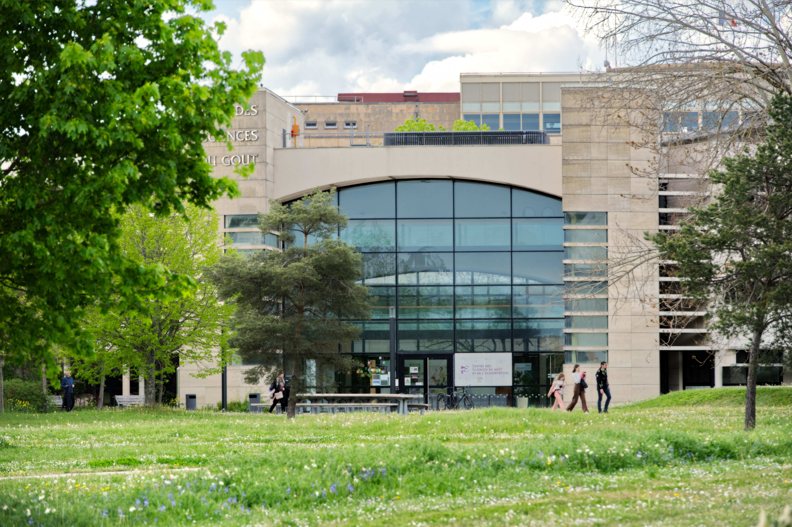
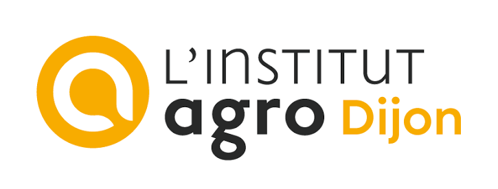

Centre for Taste and Feeding Behaviour

The Centre des Sciences du Goût et de l'Alimentation (CSGA) is a joint research unit based in Dijon, France, dedicated to understanding the physicochemical, molecular, cellular, behavioural, and psychological mechanisms underlying the sensory perception of food and food-related eating behaviour. Research examines how sensory and metabolic information shapes perception and triggers adaptive behaviours, aiming to identify levers for health and sustainable nutrition.
~200Staff members
10Research teams
4Supervisory bodies
Affiliated institutions

Leadership
Director: Loïc Briand (INRAE). Deputy Directors: Corinne Leloup and Thierry Thomas-Danguin.
Learn more
Location
9E Boulevard Jeanne d'Arc21000 Dijon, France
(+33) 3 80 68 16 21